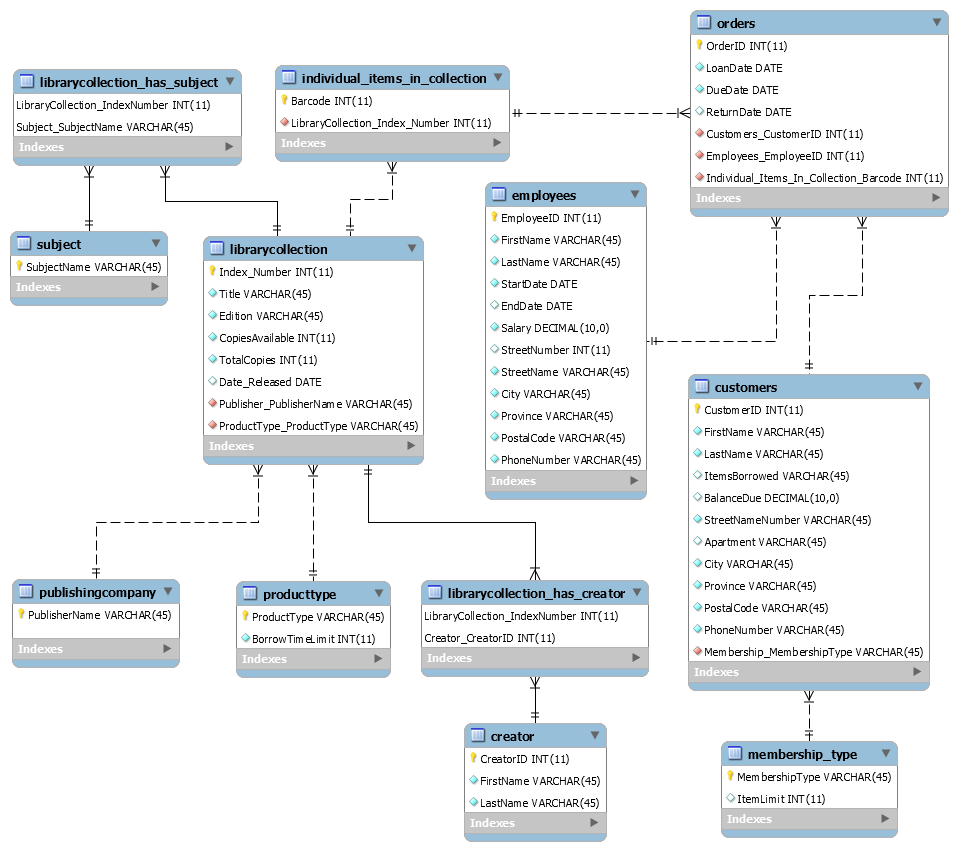

ABC Library Database
Description
The ABC Library is located in a small community and has decided to develop a database to store information electronically. The Library collection consists of unique books, CDs, and DVDs, and multiple copies are only kept for popular items. Copies of antique editions of books are also available on demand. A key condition is that each individual item must have a unique barcode.
Criteria
- Each patron can borrow multiple items from the library. Each item is loaned for a fixed period (books and CDs for 14 days, and DVDs for 7 days) and late returns may incur a fine. Each patron may borrow multiple items at a time. The maximum number of items permitted each time depends on the type of membership.
- Each loan is stored under a unique loan id, linked to the loan date and the due date. A patron may borrow the same item several times in the future, but a new loan id would be issued each time.
- Each library item may have one or more authors. There may be several items by the same author in the library. According to library cataloguing standards, all items are categorized by subject to facilitate the search process. An item may be indexed under different subjects. Each item is also associated to the name of its publisher, and a library collection may include several items by one particular publisher. The system also stores information about library staff.
Below is the database schema of the ABC Library, indicating the relationship between the tables.
Technology: MySQL
